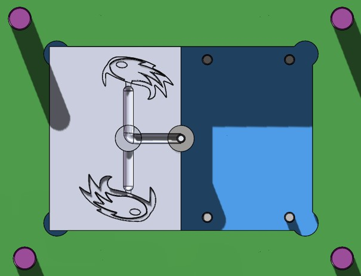
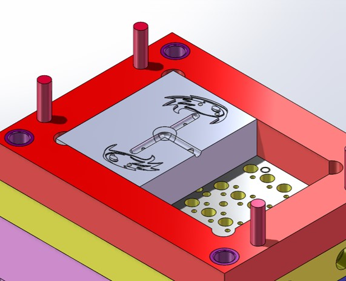
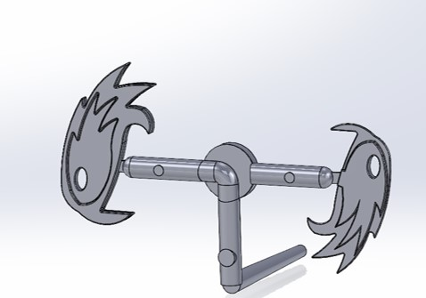
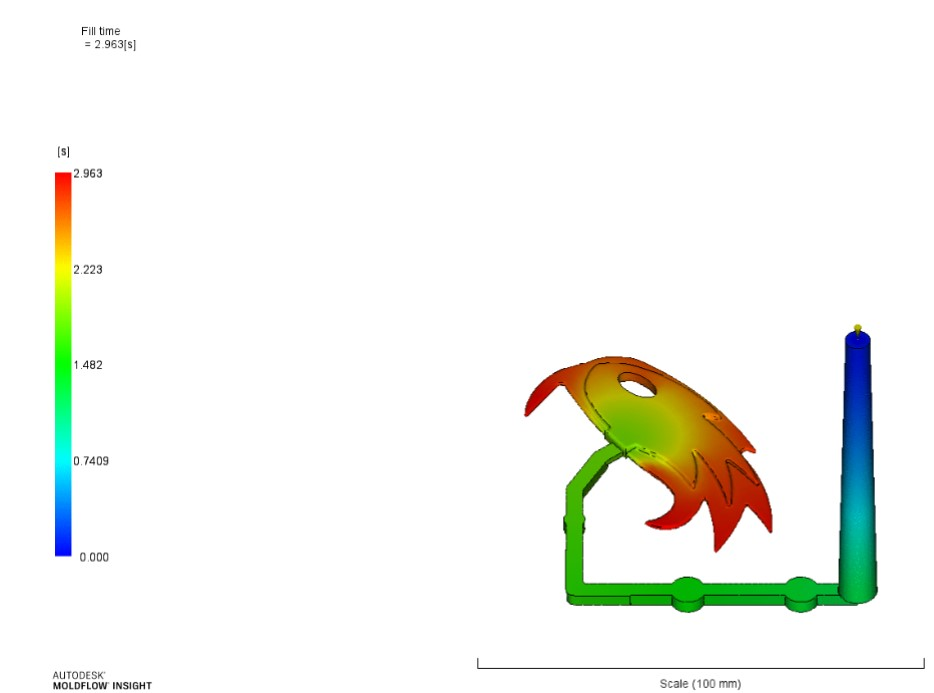
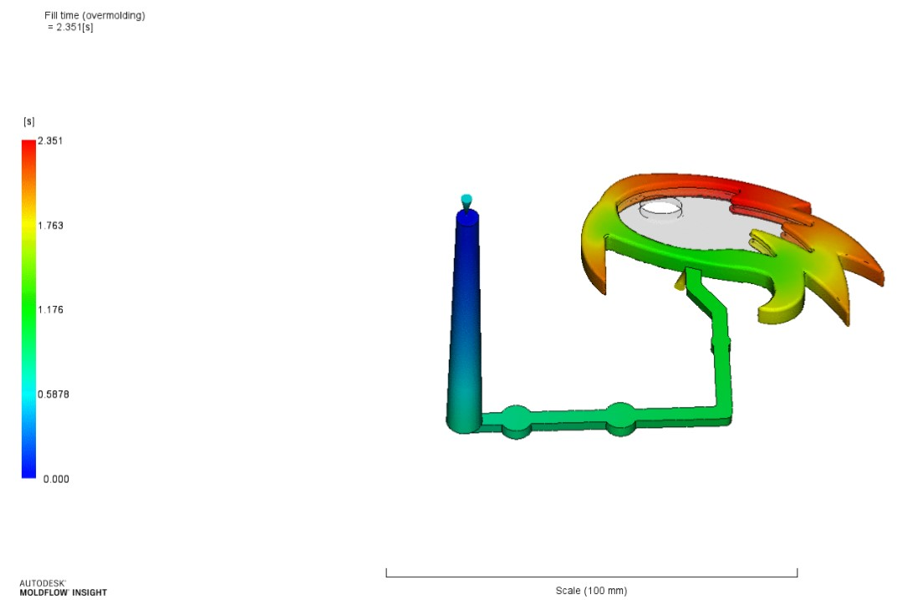

Jacoti Forsyth Design Portfolio Projects
Rowdy the Riverhawk Functional Key Chain
End-to-end product development | Injection molding | Two-shot overmolding | CNC machining
Project Overview
As part of an undergraduate engineering project at UMass Lowell, my team was challenged to take a product from initial concept through manufacturing using injection molding.
We developed a functional keychain inspired by Rowdy the Riverhawk, the university’s mascot, with our own added manufacturing challenge:
bringing back a two-step overmolding process that had not been used in eight years.
My role focused on leading the part design and contributing to mold design, CNC machining, and the preparation and execution of the injection molding process.
The project provided hands-on experience translating a product concept into a manufacturable part through close collaboration across design, simulation, tooling, and production.

Mold assembly

The Challenge
The project required more than creating a functional product.
The part had to be designed for injection molding, validated for proper material flow, and integrated into a mold capable of supporting two sequential shots.
Reintroducing overmolding after eight years added another layer of complexity.
The team needed to account for mold layout, ejector pin placement, material flow, and the tooling requirements for a two-stage process.
The mold also required a shutoff valve to enable the transition between shots.
Success depended on coordinating the part design, mold inserts, machining, and molding process to ensure that each stage worked together.

Mold A side

Mold B side
Design Approach
1. Part Design & Simulation
I led the design of the Rowdy the Riverhawk keychain, splitting the part into two sections to accommodate the two-shot overmolding process. Once the initial design was complete, my teammates ran Moldflow simulations to evaluate material filling. I incorporated the simulation results into the design to ensure the geometry supported proper filling and manufacturability.
2. Mold Insert Design
Working with a teammate, I translated the finalized part geometry onto the mold inserts while accounting for the overall mold layout, including ejector pin placement and other tooling constraints. We then simulated the complete flow path in Moldflow as a final theoretical validation before moving into manufacturing.
3. CNC Machining & Tool Preparation
I collaborated with a teammate to prepare the mold inserts in Mastercam and CNC-machine them in-house using a variety of cutting tools. After machining, our team polished and deburred the mold components to prepare them for injection molding. We also created a shutoff valve to enable the two-step overmolding process.
4. Injection Molding & Production
Once the tooling was complete, we assembled the mold and spent two days producing the final parts. Using the short-shot method, we developed the two-stage molding process by first injecting polycarbonate (PC), followed by a polycarbonate/ABS (PC/ABS) blend. This final stage brought together the design, simulation, machining, and tooling work to turn our initial concept into functional keychains.

Insert and Overmold Shots


Moldflow simulation

Rowdy Shot Progression
Outcome
The project culminated in the production of functional Rowdy the Riverhawk keychains, taking the product from concept through in-house tooling and injection molding.
Beyond the finished parts, the project gave me practical experience across the full product development cycle.
I strengthened my ability to design for manufacturability, use simulation feedback to refine part geometry,
translate CAD designs into CNC-machined tooling, and collaborate across multiple stages of production.
Most importantly, the project challenged our team to bring back a two-step overmolding process that had not been used in eight years,
giving us hands-on experience with a more complex manufacturing workflow than a conventional single-shot injection molding project.

Fully Assembled Key Chain
Catheter Manufacturing Assembly Line

Assembly Line

Bill of Materials
Project Overview
During my co-op, I was tasked with developing an assembly line concept in response to a request from the manufacturing team. The goal was to simplify the catheter manufacturing process by organizing production into a more structured, in-line workflow.
The Challenge
The existing manufacturing process needed to be easier for operators to follow while maintaining consistent assembly quality. Improving the workflow would help reduce variation between builds, increase repeatability, and make the manufacturing process more efficient.
Design Approach
I worked on designing an assembly line layout that would support a more organized and standardized manufacturing process. The focus was on creating a workflow that allowed catheters to move through production in a consistent sequence, making the process easier for the manufacturing team to perform repeatedly.
Outcome
The proposed assembly line was intended to improve workflow consistency and repeatability while making catheter assembly more straightforward for manufacturing personnel. By supporting a standardized, in-line process, the design helped address the team's goal of making production more organized and consistent.
Display Kit

Solidworks Assembly
Developed a product display kit to showcase the company's technology and highlight its key features. This is a display kit I made to show off the company's technology for a trade show
Die Design

Core Flow

Shell Flow
Die Material Flow Cross Section
This is a die designed for extrusion of core / shell filament, shown are the cross sections of the flow for both core and shell filaments